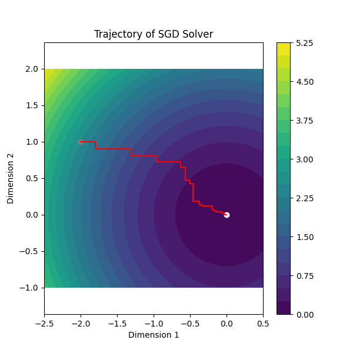

Get started#
Installation#
You can install Algosto with:
pip install algosto
Usage#
This section shows an example on how Algosto works by applying the stochastic gradient descent algorithm (SGD) to a mean of quadratic functions.
We define \(f : \mathbb R^d \to \mathbb R\) the mean of quadratic functions as
with \(f_k(x) = x_k^2\).
Workflow#
The basic workflow needs two elements :
- Your objective function
This is the function you want to minimize. It must take a numpy vector as parameter.
- A solver
In Algosto, solvers are always classes that need at least an objective function to be instanciated. Simply call the
fitmethod to minimize the objective.
Objective function#
Based on the workflow given just before, we start by defining your objective function, let’s say the mean of quadratics, and its gradient in order to use the SGD.
import numpy as np
def objective(x: np.array) -> float:
return 1/x.shape[0] * np.sum(x**2)
def grad(x: np.array, batch_filter: np.array) -> np.array:
return (2 * x) * batch_filter
Important
Some solvers require you to handle part of the logic within the code of your objective function or gradient.
This is the case with the SGD solver,
which uses the batch_filter parameter to indicate which portion of the function it will use.
The documentation for each solver provides details on the parameters used by the solver.
See SGD page to know more about the parameter batch_filter.
Algosto provides some sandbox objective functions, of which the mean of quadratic functions is a part. You can import them like this :
from algosto.functions import mean_of_quadratics
objective, grad = mean_of_quadratics()
See also
You can find a list of all available functions in the references section of the documentation.
Solver#
It’s time to talk about the solver itself.
Solvers are avaible from the algosto.solvers module where you can find all the solvers implemented in Algosto.
In this example, we are going to use the stochastic gradient descent (SGD) to minimize the objective.
from algosto.solvers import SGDSolver
solver = SGDSolver(d=2, N=2, objective, grad, random_state=42)
The parameter \(d\) is mandatory for all solvers as it defines the dimension of the optimization problem. It means that it gives the size of the vector \(x\) given to the objective function and to the gradient. The parameter \(N\) is specific to the SGD solver family as it defines the number of chunks that the objective function admit. Especially in our case, the number of chunks is equal to the dimension of \(x\).
Note
To know more about the SGD algorithm and its parameters, you can read the SGD page.
See also
You can find a list of all available solvers in the references section of the documentation.
Finally, we can minimize the objective function with the help of the fit method :
solver.fit(x_start=[-2, 1])
Once the optimization is complete, we can display the solver’s trajectory in \(\mathbb R^2\)
from algosto.evaluate import trajectory
trajectory(solver)
It gives the following result
Full workflow code#
The full Python code is avaible just below
from algosto.functions import mean_of_quadratics
from algosto.solvers import SGDSolver
from algosto.evaluate import trajectory
objective, grad = mean_of_quadratics()
solver = SGDSolver(2, 2, objective, grad, random_state=42)
solver.fit(x_start=[-2, 1])
trajectory(solver)
What’s next ?#
We have seen how to solve an optimization problem with Algosto. To go further in your exploration of Algosto’s functionnality, you should take a look at the cookbook for instance.